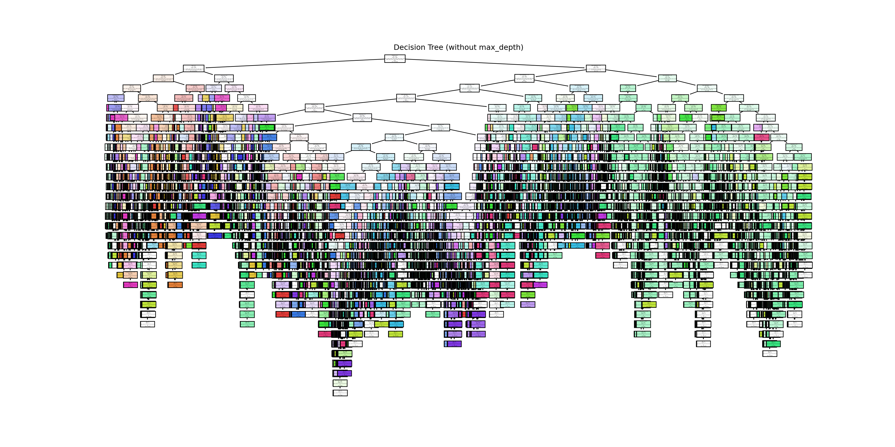

In this section we are going to perform a classification tree analysis on the dataset. We start first to load the necessary packages and the dataset. We then have prepared the data by encoding categorical variables and splitted it into training and testing sets. We then pruned the tree with different max_depth values to find the optimal tree depth that balances between training and test accuracy.
Loading R packages, Python libraries and Data Preparation
Code
# Load the dataset in Rdata <-read_csv(here("data","data_cleaned_reduced.csv"))#nb of occurences per makenb_model_per_make <- data %>%group_by(make) %>%summarise(Number =n(), .groups ='drop')#filter for re-samplingnb_model_per_make <- nb_model_per_make %>%filter(Number >1000)# Determine the target number of occurrences for resampling (e.g., maximum occurrences of a single make)target_occurrences <-max(nb_model_per_make$Number) # 4239# Initialize an empty dataframe to store the resampled dataresampled_data <-data.frame()# Perform resampling for each makefor (make_name in nb_model_per_make$make) { make_data <- data %>%filter(make == make_name)if (nrow(make_data) < target_occurrences) {# Resample with replacement if the number of occurrences is less than the target resampled_make_data <- make_data[sample(nrow(make_data), target_occurrences, replace =TRUE), ] } else {# If the number of occurrences is already sufficient, use the original data resampled_make_data <- make_data }# Combine the resampled data resampled_data <-rbind(resampled_data, resampled_make_data)}# Display the number of occurrences per make in the resampled datasettable(resampled_data$make)
Audi BMW Chevrolet Dodge Ford
4239 4239 4239 4239 4239
GMC Honda Jeep Mazda Mercedes-Benz
4239 4239 4239 4239 4239
Mitsubishi Nissan Porsche Toyota Volkswagen
4239 4239 4239 4239 4239
Code
# Save the cleaned datasetwrite_csv(resampled_data,here("data","resampled_data.csv"))
After importing all the necessary libraries and packages, we first started by loading the dataset and identified make as the target variable. We also encoded categorical variables using Label Encoding to convert them into numerical values.
We then splited the dataset into training (80%) and testing (20%). This step is essential for preventing overfitting, try to select the best model configuration by training the model, then assess the final model performance on our “unseen data” of the testing set. This helps to build a robust model that generalizes well to new data. Unfortunately, we will see later that our model is overfitting, meaning that it performs poorly when seeing new data. We will address this issue later. You will find here an plot showing the actual data splitting effectuated. The x axis represent the number of observations in our dataset and the y axis the number of makes.
Training the Decision Tree without Pruning - Results
Starting to train our Decision Tree, we have first decided to do it without any constraints and see the results of it.
DecisionTreeClassifier(random_state=42)
In a Jupyter environment, please rerun this cell to show the HTML representation or trust the notebook. On GitHub, the HTML representation is unable to render, please try loading this page with nbviewer.org.
DecisionTreeClassifier(random_state=42)
Training Accuracy (without max_depth): 0.9528
Test Accuracy (without max_depth): 0.8992
Test Cohen's Kappa (without max_depth): 0.8920
As we can see, the tree resulting from our training is much complex, takes a lot of time to train and is not interpretable at all. Also, we can see that the accuracy of the training set is higher than both the observed accuracy and cohen’s kappa of the test set, attesting that our model is overfitting.
Training the Decision Tree with K-fold cross-validation - Results
In
Code
# !pip install matplotlib seaborn scikit-learn ------- INSTALL IF NEEDEDimport matplotlib.pyplot as pltimport seaborn as snsimport pandas as pdfrom sklearn.model_selection import train_test_split, KFold, cross_val_scorefrom sklearn.preprocessing import LabelEncoderfrom sklearn.tree import DecisionTreeClassifierfrom sklearn.metrics import accuracy_score# Encode categorical variableslabel_encoders = {}for column in data.columns:if data[column].dtype =='object': le = LabelEncoder() data[column] = le.fit_transform(data[column]) label_encoders[column] = le# Split the data into features and targettarget ='make'features = data.columns.drop(target)X = data[features]y = data[target]# Initialize the classifierclf = DecisionTreeClassifier(random_state=42)# Initialize KFold cross-validatorkf = KFold(n_splits=10, shuffle=True, random_state=42)# Perform k-fold cross-validationcv_scores = cross_val_score(clf, X, y, cv=kf, scoring='accuracy')# Print the cross-validation scoresprint("Cross-validation scores: ", cv_scores)
# Split the data into training and testing setsX_train, X_test, y_train, y_test = train_test_split(X, y, test_size=0.2, random_state=42)# Train the classifier on the training setclf.fit(X_train, y_train)
DecisionTreeClassifier(random_state=42)
In a Jupyter environment, please rerun this cell to show the HTML representation or trust the notebook. On GitHub, the HTML representation is unable to render, please try loading this page with nbviewer.org.
DecisionTreeClassifier(random_state=42)
Code
# Predict on the training set and test sety_train_pred = clf.predict(X_train)y_test_pred = clf.predict(X_test)# Calculate the training and test set accuraciestrain_accuracy = accuracy_score(y_train, y_train_pred)test_accuracy = accuracy_score(y_test, y_test_pred)print(f"Training set accuracy: {train_accuracy:.4f}")
Training the Decision Tree with Pruning method - Results
In order to have a less complex tree and to fight overfittingness, we have decided to prune our tree and then train it. We chose to prune the tree by trying a few max_depth parameter values to control the tree’s growth (5, 10, 15, 20, 25, 30). We want here to find the optimal tree depth that balances between training and test accuracy. for visibility reasons, we have decided to represent a classification tree with only 5 max_depth. “None” is actually the training without any max_depth parameter. Here are our new results:
The accuracy of the model improved as the depth of the tree increased, with a max_depth of 25 or 30 providing the best test accuracy and Cohen’s kappa reaching up to 70%. A max_depth of 5 resulted in significantly lower accuracy, indicating that it is not the optimal choice. A max_depth of 10 or 15 seems to be the best compromise between overall accuracy and avoiding overfitting.
Pruning the tree with a max_depth of 25 increased the accuracy from 69.84% to 70%, reducing the gap between the test and training sets. This pruning helps to improve the generalisation performance of the model by preventing it from becoming too complex and overfitting the training data.
Variable Importance
As we have used a classification tree for the prediction, the most important variable in the model are the ones at the top of the graph. Let’s visualize the ranking of the features importance.
Code
# Visualize the feature importancesplt.figure(figsize=(10, 6))plt.barh(importances_df['Feature'], importances_df['Importance'], color='skyblue')plt.xlabel('Feature Importance')plt.ylabel('Feature')plt.title('Feature Importance in Pruned Decision Tree')plt.gca().invert_yaxis() # To display the most important feature at the topplt.show()

Code
# Print the sorted feature importances# print(importances_df)
We can see that among the top 3 most important features figure in order : the engine displacement, the model of the year and the class of the vehicle. On another hand, we can see that some features such as range_ev_city_fuel_type_2, range_ev_highway_fuel_type_2 and range_ev_city_fuel_type_1 are not important for our model for making predictions. This is certainly due to the quantity of EV and hybrid cars in the dataset and these features that are only concerning these types of vehicles.